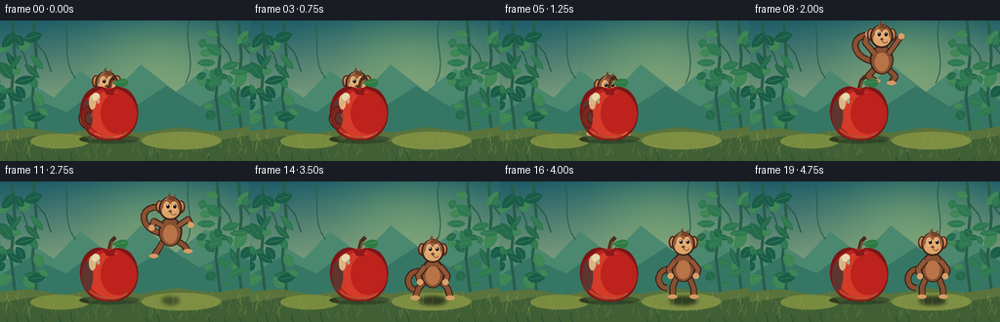
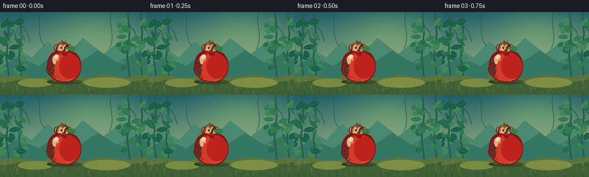

CODING AGENTS AS PIXEL WORLD MODELS
traex/GPT-5.6-Sol · dynamic_spatial_relationship_0052
点击播放 · 原生 RGB 像素
逐轮保存的候选
回放视频、检查图与代码变化。
每份候选均可单独播放。实际图片检查记录在下方工具轨迹中。
候选 01播放与检查图
点击播放 · 原生 RGB 像素

展开代码变化
--- 上一保存版本
+++ 本次保存版本
@@ -0,0 +1,264 @@
+from pathlib import Path
+import math
+import numpy as np
+from PIL import Image, ImageDraw, ImageFilter
+import artifact_io
+
+# Deterministic, hand-rendered storybook animation.
+W, H, N = 256, 144, 20
+S = 3
+rng = np.random.default_rng(5201)
+
+# Fixed decorative data avoids flicker.
+back_leaves = []
+for side in (0, 1):
+ for _ in range(31):
+ x = rng.uniform(-14, 52) if side == 0 else rng.uniform(204, 270)
+ y = rng.uniform(10, 108)
+ rx = rng.uniform(4, 11); ry = rng.uniform(2.5, 6)
+ ang = rng.uniform(-1.2, 1.2)
+ col = rng.choice([0,1,2,3])
+ back_leaves.append((x,y,rx,ry,ang,col))
+
+grass = [(rng.uniform(0,256), rng.uniform(119,140), rng.uniform(3,8), rng.uniform(-4,4)) for _ in range(95)]
+
+
+def pts(seq):
+ return [(int(round(x*S)), int(round(y*S))) for x,y in seq]
+
+def box(b):
+ return tuple(int(round(v*S)) for v in b)
+
+def ellipse(d, b, fill, outline=None, width=1):
+ d.ellipse(box(b), fill=fill, outline=outline, width=max(1,int(width*S)))
+
+def line(d, p, fill, width, joint='curve'):
+ d.line(pts(p), fill=fill, width=max(1,int(width*S)), joint=joint)
+
+def polygon(d, p, fill): d.polygon(pts(p), fill=fill)
+
+def bezier(p0,p1,p2,p3,n=30):
+ out=[]
+ for t in np.linspace(0,1,n):
+ u=1-t
+ out.append((u**3*p0[0]+3*u*u*t*p1[0]+3*u*t*t*p2[0]+t**3*p3[0],
+ u**3*p0[1]+3*u*u*t*p1[1]+3*u*t*t*p2[1]+t**3*p3[1]))
+ return out
+
+def rotated_leaf(layer, cx, cy, rx, ry, ang, fill, highlight=None):
+ d=ImageDraw.Draw(layer)
+ ca,sa=math.cos(ang),math.sin(ang)
+ poly=[]
+ # pointed elliptical leaf
+ for k in range(17):
+ q=2*math.pi*k/16
+ radial=abs(math.sin(q))**0.65
+ xx=rx*math.cos(q); yy=ry*math.sin(q)*radial
+ poly.append((cx+xx*ca-yy*sa, cy+xx*sa+yy*ca))
+ polygon(d,poly,fill)
+ if highlight:
+ line(d,[(cx-rx*.65*ca,cy-rx*.65*sa),(cx+rx*.68*ca,cy+rx*.68*sa)],highlight,.45)
+
+def background():
+ hh,ww=H*S,W*S
+ y=np.linspace(0,1,hh)[:,None,None]
+ top=np.array([29,92,104.],float); bot=np.array([193,204,137.],float)
+ arr=np.repeat((top*(1-y)+bot*y),ww,axis=1)
+ # soft sunlit center
+ yy,xx=np.mgrid[0:hh,0:ww]; cx,cy=164*S,31*S
+ glow=np.exp(-(((xx-cx)/(78*S))**2+((yy-cy)/(48*S))**2))[:,:,None]
+ arr=np.clip(arr+glow*np.array([35,31,2]),0,255).astype(np.uint8)
+ im=Image.fromarray(arr,'RGB'); d=ImageDraw.Draw(im)
+ # distant hills
+ polygon(d,[(-5,89),(28,62),(55,79),(82,51),(114,76),(144,45),(180,73),(210,49),(261,78),(261,122),(-5,122)], '#4b8870')
+ polygon(d,[(-5,99),(30,78),(68,94),(102,69),(133,91),(170,67),(204,88),(238,70),(262,86),(262,124),(-5,124)], '#367664')
+ # far trunks and vines
+ for x in [12,34,222,244]:
+ line(d,[(x,-2),(x+3,37),(x-1,78),(x+4,119)], '#285d4a', 3.2)
+ line(d,[(x+1,21),(x+12,34),(x+18,52)], '#285d4a', 1.4)
+ line(d,bezier((65,-3),(73,19),(62,38),(77,59)), '#275d4b',1.2)
+ line(d,bezier((194,-2),(187,25),(202,40),(190,64)), '#245947',1.1)
+ # distant leaves on their own smooth layer
+ ld=Image.new('RGBA',im.size,(0,0,0,0))
+ palette=['#246a4b','#2e7951','#3e8655','#195c48']
+ for x0,y0,rx,ry,a,c in back_leaves:
+ rotated_leaf(ld,x0,y0,rx,ry,a,palette[c], '#5a9a62')
+ im=Image.alpha_composite(im.convert('RGBA'),ld)
+ # ground
+ d=ImageDraw.Draw(im)
+ polygon(d,[(-2,113),(30,110),(65,116),(105,109),(144,115),(181,109),(219,114),(258,108),(258,146),(-2,146)], '#5a733c')
+ polygon(d,[(-2,124),(37,118),(77,126),(112,119),(151,125),(191,118),(221,123),(258,117),(258,146),(-2,146)], '#405f35')
+ # sun patches
+ ellipse(d,(31,116,91,131),(121,139,63,55)); ellipse(d,(145,114,226,132),(126,142,67,44))
+ # grass blades
+ for gx,gy,gh,lean in grass:
+ c = '#6e8b42' if int(gx+gy)%3 else '#8ba24e'
+ line(d,[(gx,gy+gh*.25),(gx+lean,gy-gh)],c,.55)
+ return im
+
+BASE=background()
+
+def shadow(im, cx, cy, rx, alpha=90):
+ lay=Image.new('RGBA',im.size,(0,0,0,0)); d=ImageDraw.Draw(lay)
+ ellipse(d,(cx-rx,cy-3,cx+rx,cy+3),(15,30,25,alpha))
+ lay=lay.filter(ImageFilter.GaussianBlur(2.1*S))
+ return Image.alpha_composite(im,lay)
+
+def draw_monkey(im, x, ground, phase, facing=1):
+ """Draw a friendly articulated monkey. ground is foot level; phase selects pose."""
+ lay=Image.new('RGBA',im.size,(0,0,0,0)); d=ImageDraw.Draw(lay)
+ # Coordinates relative to anchor, mirror through facing.
+ def P(px,py): return (x+facing*px,ground+py)
+ # Pose controls
+ jump = phase in ('takeoff','air_up','air_apex','air_down')
+ crouch = phase in ('crouch','land')
+ apex = phase=='air_apex'
+ body_y = -31 + (4 if crouch else 0)
+ head_y = -55 + (5 if crouch else 0)
+ # tail behind body, lively and unmistakable
+ if jump:
+ tail = bezier(P(-8,-30),P(-31,-34),P(-33,-56),P(-15,-57))
+ else:
+ tail = bezier(P(-8,-29),P(-28,-35),P(-30,-12),P(-17,-11))
+ line(d,tail,'#3a2117',7.2); line(d,tail,'#8a5030',4.8)
+ # legs (behind torso), animated into tuck on apex
+ if jump:
+ if apex:
+ legs=[(P(-6,-24),P(-14,-15),P(-6,-10)),(P(5,-24),P(14,-15),P(10,-8))]
+ else:
+ legs=[(P(-6,-24),P(-13,-13),P(-17,-7)),(P(5,-24),P(14,-18),P(18,-12))]
+ elif crouch:
+ legs=[(P(-6,-23),P(-15,-12),P(-18,-3)),(P(5,-23),P(15,-13),P(18,-3))]
+ else:
+ legs=[(P(-6,-24),P(-11,-12),P(-11,-2)),(P(5,-24),P(10,-12),P(11,-2))]
+ for a,b,c in legs:
+ line(d,[a,b,c],'#3c2318',7); line(d,[a,b,c],'#875032',4.8)
+ ellipse(d,(c[0]-4.6,c[1]-2.2,c[0]+4.6,c[1]+2.2),'#d59b65')
+ # body with rim and warm belly
+ ellipse(d,(x-12,ground+body_y-16,x+12,ground+body_y+14),'#3a2118')
+ ellipse(d,(x-10.5,ground+body_y-14.5,x+10.5,ground+body_y+13),'#865033')
+ ellipse(d,(x-7.2,ground+body_y-8,x+7.2,ground+body_y+11),'#b87447')
+ # Arms: raised during flight, braced while peeking/crouching
+ if jump:
+ if phase in ('air_up','air_apex'):
+ arms=[(P(-7,body_y-7),P(-17,body_y-19),P(-14,body_y-27)),
+ (P(7,body_y-7),P(17,body_y-21),P(20,body_y-25))]
+ else:
+ arms=[(P(-8,body_y-7),P(-17,body_y-12),P(-19,body_y-5)),
+ (P(8,body_y-7),P(18,body_y-14),P(21,body_y-8))]
+ else:
+ arms=[(P(-8,body_y-8),P(-15,body_y+1),P(-13,body_y+8)),
+ (P(8,body_y-8),P(15,body_y+1),P(13,body_y+8))]
+ for a,b,c in arms:
+ line(d,[a,b,c],'#3b2117',6.8); line(d,[a,b,c],'#925737',4.6)
+ ellipse(d,(c[0]-3.2,c[1]-3,c[0]+3.2,c[1]+3),'#d9a06a')
+ # ears, head, muzzle
+ hx,hy=x,ground+head_y
+ ellipse(d,(hx-15,hy-9,hx-7,hy+4),'#542f20')
+ ellipse(d,(hx+7,hy-9,hx+15,hy+4),'#542f20')
+ ellipse(d,(hx-13.4,hy-7.5,hx-8,hy+1.8),'#d08b59')
+ ellipse(d,(hx+8,hy-7.5,hx+13.4,hy+1.8),'#d08b59')
+ ellipse(d,(hx-11.6,hy-13,hx+11.6,hy+11),'#3b2117')
+ ellipse(d,(hx-10.1,hy-12,hx+10.1,hy+9.5),'#975b39')
+ # tuft
+ polygon(d,[(hx-4,hy-11),(hx-1,hy-17),(hx+1,hy-11),(hx+5,hy-15),(hx+4,hy-8)],'#764229')
+ ellipse(d,(hx-8.6,hy-5,hx+8.6,hy+9.2),'#dda46b')
+ ellipse(d,(hx-7,hy-8,hx-0.5,hy+2),'#e4ae76')
+ ellipse(d,(hx+0.5,hy-8,hx+7,hy+2),'#e4ae76')
+ # eyes, looking toward landing direction
+ eye_shift=1.0*facing
+ ellipse(d,(hx-5+eye_shift,hy-5,hx-2+eye_shift,hy-1),'#17130f')
+ ellipse(d,(hx+2+eye_shift,hy-5,hx+5+eye_shift,hy-1),'#17130f')
+ ellipse(d,(hx-4.2+eye_shift,hy-4.7,hx-3.3+eye_shift,hy-3.5),'white')
+ ellipse(d,(hx+2.8+eye_shift,hy-4.7,hx+3.7+eye_shift,hy-3.5),'white')
+ ellipse(d,(hx-1.5,hy+1,hx+1.5,hy+3.2),'#68422c')
+ # smile
+ line(d,bezier((hx,hy+3),(hx+2*facing,hy+7),(hx+5*facing,hy+6),(hx+6*facing,hy+4),12),'#663722',.8)
+ # subtle head highlight
+ line(d,[(hx-6,hy-10),(hx-2,hy-12)],(210,139,82,160),1.0)
+ return Image.alpha_composite(im,lay)
+
+def draw_apple(im, bob=0):
+ # oversized, glossy foreground apple, fixed spatial reference.
+ lay=Image.new('RGBA',im.size,(0,0,0,0)); d=ImageDraw.Draw(lay)
+ cy=95+bob
+ # apple cast shadow
+ ellipse(d,(81,117+bob,143,126+bob),(18,27,20,90))
+ # stem behind fruit
+ line(d,[(111,73+bob),(114,61+bob),(118,57+bob)],'#4a2b1b',4.1)
+ line(d,[(112,72+bob),(115,61+bob)],'#815133',1.5)
+ # leaf
+ leaf=bezier((115,64+bob),(126,55+bob),(136,61+bob),(128,68+bob),16)+bezier((128,68+bob),(122,69+bob),(118,66+bob),(115,64+bob),12)
+ polygon(d,leaf,'#2e7b45')
+ line(d,[(117,64+bob),(129,62+bob)],'#70a85a',.7)
+ # construct natural lobed silhouette
+ outline=[]
+ outline += bezier((112,71+bob),(99,62+bob),(84,71+bob),(82,89+bob),15)
+ outline += bezier((82,89+bob),(80,109+bob),(92,123+bob),(111,123+bob),15)[1:]
+ outline += bezier((111,123+bob),(132,124+bob),(143,109+bob),(141,90+bob),15)[1:]
+ outline += bezier((141,90+bob),(139,72+bob),(124,63+bob),(112,71+bob),15)[1:]
+ polygon(d,outline,'#7a1716')
+ # inner gradients as nested organic forms
+ inner=[(x,y) for x,y in outline]
+ # broad red fill shifted upward
+ ellipse(d,(84,69+bob,140,122+bob),'#b82420')
+ ellipse(d,(90,72+bob,136,119+bob),'#d43b29')
+ ellipse(d,(103,74+bob,137,116+bob),'#bd221c')
+ # restore slight top cleft with dark red notch
+ polygon(d,[(104,68+bob),(112,71+bob),(119,67+bob),(116,76+bob),(109,76+bob)],'#8f1918')
+ # side shade and lower bounce light
+ ellipse(d,(84,81+bob,95,112+bob),(114,20,21,170))
+ line(d,bezier((92,112+bob),(102,121+bob),(121,122+bob),(130,114+bob)),(238,87,47,150),1.5)
+ # glossy highlights
+ ellipse(d,(91,76+bob,98,91+bob),(255,198,139,205))
+ ellipse(d,(94,74+bob,102,82+bob),(255,230,182,225))
+ ellipse(d,(99,80+bob,102,85+bob),(255,218,173,150))
+ # little ground-contact darkening
+ line(d,[(101,122+bob),(124,122+bob)],(90,20,18,170),1.0)
+ return Image.alpha_composite(im,lay)
+
+def ease(v):
+ return v*v*(3-2*v)
+
+def frame(i):
+ im=BASE.copy()
+ # Timing: establish behind, anticipation, jump arc, settle to the right.
+ if i <= 3:
+ x=109 + math.sin(i*.8)*.45; lift=0; pose='idle'
+ elif i <= 5:
+ q=(i-3)/2; x=109+2*q; lift=-1*q; pose='crouch'
+ elif i <= 13:
+ q=(i-5)/8
+ x=111+75*ease(q)
+ lift=-52*math.sin(math.pi*q)
+ if q<.28: pose='air_up'
+ elif q<.68: pose='air_apex'
+ else: pose='air_down'
+ elif i==14:
+ x=187; lift=2; pose='land'
+ else:
+ x=187 + 1.2*math.sin((i-14)*.8)*math.exp(-(i-14)*.35)
+ lift=-1.2*math.sin((i-14)*1.4)*math.exp(-(i-14)*.35)
+ pose='idle'
+ # Shadows communicate height and trajectories.
+ if i <= 5:
+ # monkey shadow hidden beneath apple
+ pass
+ else:
+ height=max(0,-lift)
+ im=shadow(im,x,122, max(5,13-height*.13), int(max(18,85-height)))
+ # Monkey always rendered first while crossing, so apple visibly occludes it at start.
+ im=draw_monkey(im,x,120+lift,pose,1)
+ im=draw_apple(im,0)
+ # foreground grass at bottom for depth
+ fg=Image.new('RGBA',im.size,(0,0,0,0)); d=ImageDraw.Draw(fg)
+ for gx in [8,18,29,44,62,74,151,163,215,231,247]:
+ h=5+(gx*7%8)
+ line(d,[(gx,145),(gx-2,h and 145-h)],'#274f31',1.0)
+ line(d,[(gx,145),(gx+3,147-h*.8)],'#315c34',.8)
+ im=Image.alpha_composite(im,fg)
+ # Downsample gives soft, clean illustrated edges.
+ return np.asarray(im.convert('RGB').resize((W,H),Image.Resampling.LANCZOS),dtype=np.uint8)
+
+frames=np.stack([frame(i) for i in range(N)],axis=0)
+artifact_io.save(frames,Path(__file__).resolve().parent)
可观测工具轨迹
实际执行的命令与返回图片。
命令 1exit 0
/bin/bash -lc "cat prompt.txt && printf '\\n---RULES---\\n' && cat GENERATION_RULES.md && printf '\\n---SPEC---\\n' && cat task_spec.json"
命令 2exit 0
/bin/bash -lc "find . -maxdepth 2 -type f -printf '%p\\n' | sort"
命令 3exit 0
/bin/bash -lc "which ffmpeg || true; which blender || true; python - <<'PY'
try:
import cv2; print('cv2',cv2.__version__)
except Exception as e: print('no cv2',e)
try:
from PIL import Image; print('PIL ok')
except Exception as e: print('no PIL',e)
PY"命令 4exit 0
/bin/bash -lc 'cat artifact_io.py'
命令 5exit 0
/bin/bash -lc "cat > generate.py <<'PY'
from pathlib import Path
import math
import numpy as np
from PIL import Image, ImageDraw, ImageFilter
import artifact_io
# Deterministic, hand-rendered storybook animation.
W, H, N = 256, 144, 20
S = 3
rng = np.random.default_rng(5201)
# Fixed decorative data avoids flicker.
back_leaves = []
for side in (0, 1):
for _ in range(31):
x = rng.uniform(-14, 52) if side == 0 else rng.uniform(204, 270)
y = rng.uniform(10, 108)
rx = rng.uniform(4, 11); ry = rng.uniform(2.5, 6)
ang = rng.uniform(-1.2, 1.2)
col = rng.choice([0,1,2,3])
back_leaves.append((x,y,rx,ry,ang,col))
grass = [(rng.uniform(0,256), rng.uniform(119,140), rng.uniform(3,8), rng.uniform(-4,4)) for _ in range(95)]
def pts(seq):
return [(int(round(x*S)), int(round(y*S))) for x,y in seq]
def box(b):
return tuple(int(round(v*S)) for v in b)
def ellipse(d, b, fill, outline=None, width=1):
d.ellipse(box(b), fill=fill, outline=outline, width=max(1,int(width*S)))
def line(d, p, fill, width, joint='curve'):
d.line(pts(p), fill=fill, width=max(1,int(width*S)), joint=joint)
def polygon(d, p, fill): d.polygon(pts(p), fill=fill)
def bezier(p0,p1,p2,p3,n=30):
out=[]
for t in np.linspace(0,1,n):
u=1-t
out.append((u**3*p0[0]+3*u*u*t*p1[0]+3*u*t*t*p2[0]+t**3*p3[0],
u**3*p0[1]+3*u*u*t*p1[1]+3*u*t*t*p2[1]+t**3*p3[1]))
return out
def rotated_leaf(layer, cx, cy, rx, ry, ang, fill, highlight=None):
d=ImageDraw.Draw(layer)
ca,sa=math.cos(ang),math.sin(ang)
poly=[]
# pointed elliptical leaf
for k in range(17):
q=2*math.pi*k/16
radial=abs(math.sin(q))**0.65
xx=rx*math.cos(q); yy=ry*math.sin(q)*radial
poly.append((cx+xx*ca-yy*sa, cy+xx*sa+yy*ca))
polygon(d,poly,fill)
if highlight:
line(d,[(cx-rx*.65*ca,cy-rx*.65*sa),(cx+rx*.68*ca,cy+rx*.68*sa)],highlight,.45)
def background():
hh,ww=H*S,W*S
y=np.linspace(0,1,hh)[:,None,None]
top=np.array([29,92,104.],float); bot=np.array([193,204,137.],float)
arr=np.repeat((top*(1-y)+bot*y),ww,axis=1)
# soft sunlit center
yy,xx=np.mgrid[0:hh,0:ww]; cx,cy=164*S,31*S
glow=np.exp(-(((xx-cx)/(78*S))**2+((yy-cy)/(48*S))**2))[:,:,None]
arr=np.clip(arr+glow*np.array([35,31,2]),0,255).astype(np.uint8)
im=Image.fromarray(arr,'RGB'); d=ImageDraw.Draw(im)
# distant hills
polygon(d,[(-5,89),(28,62),(55,79),(82,51),(114,76),(144,45),(180,73),(210,49),(261,78),(261,122),(-5,122)], '#4b8870')
polygon(d,[(-5,99),(30,78),(68,94),(102,69),(133,91),(170,67),(204,88),(238,70),(262,86),(262,124),(-5,124)], '#367664')
# far trunks and vines
for x in [12,34,222,244]:
line(d,[(x,-2),(x+3,37),(x-1,78),(x+4,119)], '#285d4a', 3.2)
line(d,[(x+1,21),(x+12,34),(x+18,52)], '#285d4a', 1.4)
line(d,bezier((65,-3),(73,19),(62,38),(77,59)), '#275d4b',1.2)
line(d,bezier((194,-2),(187,25),(202,40),(190,64)), '#245947',1.1)
# distant leaves on their own smooth layer
ld=Image.new('RGBA',im.size,(0,0,0,0))
palette=['#246a4b','#2e7951','#3e8655','#195c48']
for x0,y0,rx,ry,a,c in back_leaves:
rotated_leaf(ld,x0,y0,rx,ry,a,palette[c], '#5a9a62')
im=Image.alpha_composite(im.convert('RGBA'),ld)
# ground
d=ImageDraw.Draw(im)
polygon(d,[(-2,113),(30,110),(65,116),(105,109),(144,115),(181,109),(219,114),(258,108),(258,146),(-2,146)], '#5a733c')
polygon(d,[(-2,124),(37,118),(77,126),(112,119),(151,125),(191,118),(221,123),(258,117),(258,146),(-2,146)], '#405f35')
# sun patches
ellipse(d,(31,116,91,131),(121,139,63,55)); ellipse(d,(145,114,226,132),(126,142,67,44))
# grass blades
for gx,gy,gh,lean in grass:
c = '#6e8b42' if int(gx+gy)%3 else '#8ba24e'
line(d,[(gx,gy+gh*.25),(gx+lean,gy-gh)],c,.55)
return im
BASE=background()
def shadow(im, cx, cy, rx, alpha=90):
lay=Image.new('RGBA',im.size,(0,0,0,0)); d=ImageDraw.Draw(lay)
ellipse(d,(cx-rx,cy-3,cx+rx,cy+3),(15,30,25,alpha))
lay=lay.filter(ImageFilter.GaussianBlur(2.1*S))
return Image.alpha_composite(im,lay)
def draw_monkey(im, x, ground, phase, facing=1):
\"\"\"Draw a friendly articulated monkey. ground is foot level; phase selects pose.\"\"\"
lay=Image.new('RGBA',im.size,(0,0,0,0)); d=ImageDraw.Draw(lay)
# Coordinates relative to anchor, mirror through facing.
def P(px,py): return (x+facing*px,ground+py)
# Pose controls
jump = phase in ('takeoff','air_up','air_apex','air_down')
crouch = phase in ('crouch','land')
apex = phase=='air_apex'
body_y = -31 + (4 if crouch else 0)
head_y = -55 + (5 if crouch else 0)
# tail behind body, lively and unmistakable
if jump:
tail = bezier(P(-8,-30),P(-31,-34),P(-33,-56),P(-15,-57))
else:
tail = bezier(P(-8,-29),P(-28,-35),P(-30,-12),P(-17,-11))
line(d,tail,'#3a2117',7.2); line(d,tail,'#8a5030',4.8)
# legs (behind torso), animated into tuck on apex
if jump:
if apex:
legs=[(P(-6,-24),P(-14,-15),P(-6,-10)),(P(5,-24),P(14,-15),P(10,-8))]
else:
legs=[(P(-6,-24),P(-13,-13),P(-17,-7)),(P(5,-24),P(14,-18),P(18,-12))]
elif crouch:
legs=[(P(-6,-23),P(-15,-12),P(-18,-3)),(P(5,-23),P(15,-13),P(18,-3))]
else:
legs=[(P(-6,-24),P(-11,-12),P(-11,-2)),(P(5,-24),P(10,-12),P(11,-2))]
for a,b,c in legs:
line(d,[a,b,c],'#3c2318',7); line(d,[a,b,c],'#875032',4.8)
ellipse(d,(c[0]-4.6,c[1]-2.2,c[0]+4.6,c[1]+2.2),'#d59b65')
# body with rim and warm belly
ellipse(d,(x-12,ground+body_y-16,x+12,ground+body_y+14),'#3a2118')
ellipse(d,(x-10.5,ground+body_y-14.5,x+10.5,ground+body_y+13),'#865033')
ellipse(d,(x-7.2,ground+body_y-8,x+7.2,ground+body_y+11),'#b87447')
# Arms: raised during flight, braced while peeking/crouching
if jump:
if phase in ('air_up','air_apex'):
arms=[(P(-7,body_y-7),P(-17,body_y-19),P(-14,body_y-27)),
(P(7,body_y-7),P(17,body_y-21),P(20,body_y-25))]
else:
arms=[(P(-8,body_y-7),P(-17,body_y-12),P(-19,body_y-5)),
(P(8,body_y-7),P(18,body_y-14),P(21,body_y-8))]
else:
arms=[(P(-8,body_y-8),P(-15,body_y+1),P(-13,body_y+8)),
(P(8,body_y-8),P(15,body_y+1),P(13,body_y+8))]
for a,b,c in arms:
line(d,[a,b,c],'#3b2117',6.8); line(d,[a,b,c],'#925737',4.6)
ellipse(d,(c[0]-3.2,c[1]-3,c[0]+3.2,c[1]+3),'#d9a06a')
# ears, head, muzzle
hx,hy=x,ground+head_y
ellipse(d,(hx-15,hy-9,hx-7,hy+4),'#542f20')
ellipse(d,(hx+7,hy-9,hx+15,hy+4),'#542f20')
ellipse(d,(hx-13.4,hy-7.5,hx-8,hy+1.8),'#d08b59')
ellipse(d,(hx+8,hy-7.5,hx+13.4,hy+1.8),'#d08b59')
ellipse(d,(hx-11.6,hy-13,hx+11.6,hy+11),'#3b2117')
ellipse(d,(hx-10.1,hy-12,hx+10.1,hy+9.5),'#975b39')
# tuft
polygon(d,[(hx-4,hy-11),(hx-1,hy-17),(hx+1,hy-11),(hx+5,hy-15),(hx+4,hy-8)],'#764229')
ellipse(d,(hx-8.6,hy-5,hx+8.6,hy+9.2),'#dda46b')
ellipse(d,(hx-7,hy-8,hx-0.5,hy+2),'#e4ae76')
ellipse(d,(hx+0.5,hy-8,hx+7,hy+2),'#e4ae76')
# eyes, looking toward landing direction
eye_shift=1.0*facing
ellipse(d,(hx-5+eye_shift,hy-5,hx-2+eye_shift,hy-1),'#17130f')
ellipse(d,(hx+2+eye_shift,hy-5,hx+5+eye_shift,hy-1),'#17130f')
ellipse(d,(hx-4.2+eye_shift,hy-4.7,hx-3.3+eye_shift,hy-3.5),'white')
ellipse(d,(hx+2.8+eye_shift,hy-4.7,hx+3.7+eye_shift,hy-3.5),'white')
ellipse(d,(hx-1.5,hy+1,hx+1.5,hy+3.2),'#68422c')
# smile
line(d,bezier((hx,hy+3),(hx+2*facing,hy+7),(hx+5*facing,hy+6),(hx+6*facing,hy+4),12),'#663722',.8)
# subtle head highlight
line(d,[(hx-6,hy-10),(hx-2,hy-12)],(210,139,82,160),1.0)
return Image.alpha_composite(im,lay)
def draw_apple(im, bob=0):
# oversized, glossy foreground apple, fixed spatial reference.
lay=Image.new('RGBA',im.size,(0,0,0,0)); d=ImageDraw.Draw(lay)
cy=95+bob
# apple cast shadow
ellipse(d,(81,117+bob,143,126+bob),(18,27,20,90))
# stem behind fruit
line(d,[(111,73+bob),(114,61+bob),(118,57+bob)],'#4a2b1b',4.1)
line(d,[(112,72+bob),(115,61+bob)],'#815133',1.5)
# leaf
leaf=bezier((115,64+bob),(126,55+bob),(136,61+bob),(128,68+bob),16)+bezier((128,68+bob),(122,69+bob),(118,66+bob),(115,64+bob),12)
polygon(d,leaf,'#2e7b45')
line(d,[(117,64+bob),(129,62+bob)],'#70a85a',.7)
# construct natural lobed silhouette
outline=[]
outline += bezier((112,71+bob),(99,62+bob),(84,71+bob),(82,89+bob),15)
outline += bezier((82,89+bob),(80,109+bob),(92,123+bob),(111,123+bob),15)[1:]
outline += bezier((111,123+bob),(132,124+bob),(143,109+bob),(141,90+bob),15)[1:]
outline += bezier((141,90+bob),(139,72+bob),(124,63+bob),(112,71+bob),15)[1:]
polygon(d,outline,'#7a1716')
# inner gradients as nested organic forms
inner=[(x,y) for x,y in outline]
# broad red fill shifted upward
ellipse(d,(84,69+bob,140,122+bob),'#b82420')
ellipse(d,(90,72+bob,136,119+bob),'#d43b29')
ellipse(d,(103,74+bob,137,116+bob),'#bd221c')
# restore slight top cleft with dark red notch
polygon(d,[(104,68+bob),(112,71+bob),(119,67+bob),(116,76+bob),(109,76+bob)],'#8f1918')
# side shade and lower bounce light
ellipse(d,(84,81+bob,95,112+bob),(114,20,21,170))
line(d,bezier((92,112+bob),(102,121+bob),(121,122+bob),(130,114+bob)),(238,87,47,150),1.5)
# glossy highlights
ellipse(d,(91,76+bob,98,91+bob),(255,198,139,205))
ellipse(d,(94,74+bob,102,82+bob),(255,230,182,225))
ellipse(d,(99,80+bob,102,85+bob),(255,218,173,150))
# little ground-contact darkening
line(d,[(101,122+bob),(124,122+bob)],(90,20,18,170),1.0)
return Image.alpha_composite(im,lay)
def ease(v):
return v*v*(3-2*v)
def frame(i):
im=BASE.copy()
# Timing: establish behind, anticipation, jump arc, settle to the right.
if i <= 3:
x=109 + math.sin(i*.8)*.45; lift=0; pose='idle'
elif i <= 5:
q=(i-3)/2; x=109+2*q; lift=-1*q; pose='crouch'
elif i <= 13:
q=(i-5)/8
x=111+75*ease(q)
lift=-52*math.sin(math.pi*q)
if q<.28: pose='air_up'
elif q<.68: pose='air_apex'
else: pose='air_down'
elif i==14:
x=187; lift=2; pose='land'
else:
x=187 + 1.2*math.sin((i-14)*.8)*math.exp(-(i-14)*.35)
lift=-1.2*math.sin((i-14)*1.4)*math.exp(-(i-14)*.35)
pose='idle'
# Shadows communicate height and trajectories.
if i <= 5:
# monkey shadow hidden beneath apple
pass
else:
height=max(0,-lift)
im=shadow(im,x,122, max(5,13-height*.13), int(max(18,85-height)))
# Monkey always rendered first while crossing, so apple visibly occludes it at start.
im=draw_monkey(im,x,120+lift,pose,1)
im=draw_apple(im,0)
# foreground grass at bottom for depth
fg=Image.new('RGBA',im.size,(0,0,0,0)); d=ImageDraw.Draw(fg)
for gx in [8,18,29,44,62,74,151,163,215,231,247]:
h=5+(gx*7%8)
line(d,[(gx,145),(gx-2,h and 145-h)],'#274f31',1.0)
line(d,[(gx,145),(gx+3,147-h*.8)],'#315c34',.8)
im=Image.alpha_composite(im,fg)
# Downsample gives soft, clean illustrated edges.
return np.asarray(im.convert('RGB').resize((W,H),Image.Resampling.LANCZOS),dtype=np.uint8)
frames=np.stack([frame(i) for i in range(N)],axis=0)
artifact_io.save(frames,Path(__file__).resolve().parent)
PY
python generate.py
ls -lh pixels.npz inspection.png frames/00.png frames/19.png"命令 6exit 0
/bin/bash -lc "python - <<'PY'
import numpy as np
from pathlib import Path
z=np.load('pixels.npz')['pixels']
assert z.shape==(144,256,20)
assert len(list(Path('frames').glob('*.png')))==20
# Decode and report temporal change, proving non-static output.
r=((z>>16)&255).astype(np.uint8); g=((z>>8)&255).astype(np.uint8); b=(z&255).astype(np.uint8)
a=np.stack([r,g,b],-1).transpose(2,0,1,3)
print('shape',a.shape,'dtype',a.dtype,'changed pixels/frame', [int(np.any(a[i]"'!=a[i-1],axis=2).sum()) for i in range(1,20)])
PY'视觉工具实际返回图片 1

视觉工具实际返回图片 2

保存候选 1 份；完成命令 6 次；可验证图片返回 2 张。原始 API 响应与完整日志保留在本地。